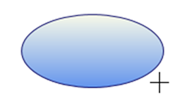
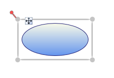
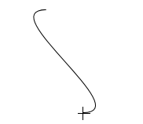
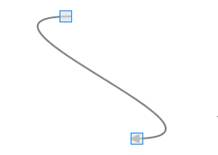
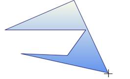
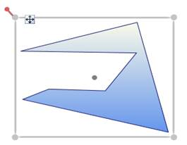

You can draw on a page by click and drag on the page.
Follow are the below steps to draw a shape or a line:
1. Set the EnableDrawingTools property of DiagramView to true.
2. Select the DrawingTool as required from DrawingTools option.
3. Click and drag. Preview of the drawing will be displayed.
4. Release the mouse. Shape or line will be drawn.
Note: These steps are common for all shapes and lines drawing, except Polygon.
Shape Drawing:
Preview Ellipse – while Drawing

Figure 139:Ellipse Preview
Ellipse – After Drawing.

Figure 140:Ellipse(Node)
Line Drawing:
Bezier Line Preview – While Drawing

Figure 141:Bezier Line Preview
Bezier Line – After Drawing

Figure 142:Bezier Line(Line Connector)
Note:
· The drawn shape will be converted into a Node.
· The drawn line will be converted into a LineConnector.
· You can continually draw the selected shape.
· Lines cannot be drawn continually.
Steps for drawing a Polygon Drawing:
1. Set the EnableDrawingTools property of DiagramView to be true.
2. Select the DrawingTool as required from DrawingTools option.
3. Click, where you want the first point for polygon.
4. Drag the mouse pointer. Preview of the drawing will be displayed.
5. Click, where you want to place the Intermediate points of Polygon
6. Right-click to complete the drawing.
Preview Polygon – While Drawing

Figure 143:Polygon Preview
Polygon – After Drawing

Figure 144:Polygon(Node)